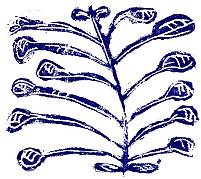

THERE are few things certain about compulsory schooling, but two of the most important are that it is the greatest adventure mankind has yet undertaken and that so far it is only in the uncertain beginnings of what will be a long evolution. To its evolution, it is not too much to claim, this book makes a significant contribution. Uneven, often almost wilful in its approach, it gives nevertheless a vivid picture of a school full of vitality in pursuit of values deeply rooted in the children's lives and capable of serving them lifelong. Oruaiti School functioned as a community of artists and scientists who turned a frank and searching gaze on all that came within their ambit. Curiosity and emotional force led them to explore together the natural world and the world of their feelings. They learned to esteem each other's explorations, discoveries, and records with tact and with discriminating enthusiasm, so that a fine collective strength was developed, a strength depending on each child making an individual search and bringing to the group what only he could give. In return the group sustained each child and valued his discoveries; its achievements pressed him on to further exploration. This feeling grew from the direction of the common search and the wholeness it gave the children.
In this school too there was a proper recognition of the making propensity. Homo faber and homo ludens were together in the child who thought and felt. Studies and activities grew naturally out of what preceded them. New techniques were discovered and skills practised as each achievement set new standards. In such an ‘integrated’ curriculum the integrity of persons is preserved even more than the integrity of topics. Children recognize themselves in and through the things they make. From their paintings, their prints and their pottery they learn answers to the question ‘Who am I?’ They are then free to respect others for their achievements and their insight because they themselves, standing amid the work of their hands, take a solid pride in their own craftsmanship or artistry.
In much discussion of teaching there is an assumption that a radical difference of kind exists between work which is variously called ‘creative’, ‘imaginative’, or ‘expressive’—work which is about children's feelings and sensations—and, on the other hand, work which is distinguished as ‘factual’ and which concerns the ‘real’ or ‘outside’ world. Attitudes that follow from this assumption induce children to write ‘creatively’ by injecting an artificial heightening of tone or a spurious fancy into an otherwise straightforward account, and force them into a clipped, inelegantly dull jargon whenever presenting a report. It seems evident from the work at Oruaiti that the distinction has little relevance to the work of children. A matter-of-fact acceptance of a total event in which feelings are involved with all the other facts of the situation permits a growth in awareness and a search for exactness which the usual view prevents or hinders. These children turned the same dispassionate and unselfconscious regard on to their own feelings as on to other events, and pursued with the same relentless demand for exactitude a fact of natural science or a fact of human response. It is this that made possible the beauty of the poetry, the excellence of the graphic and ceramic work, and the careful scientific observation. Because the children were not required to make a divorce between the parts of their experience, a divorce hostile to their intuitive grasp of situations, they could bend to their work with an enthusiasm and a degree of concentration which ordinary schooling never touches.
And always the school functioned as a community, a community of artist-scientists. In considering the work so amply laid out here we must pay attention to both elements, the community and the individual artist-scientists. The school functioned as a community not in spite of but because of the individualism of its members—each person counted and was expected to make his own contribution to its life. Personal views, even eccentric ones, were welcomed. The primary demand on the child was that he should think through to exactly what he observed, felt, or believed. As is made clear in the course of the book a great deal of careful training went into eliminating the merely stock response and the expected answer. But combined with this demand for the expression of a personal view, and of course necessary to it, was the willing acceptance of idiosyncrasy and the affectionate acceptance of the strengths and limitations of each member of the group. In this school this was made possible by mutual recognition of artistic achievement.
T. S. Eliot remarks that the experience of enjoying a bad work of art is qualitatively different from that of enjoying a good work of art. The former mis-educates just as surely as the latter educates. This is especially true of the child's own work. To be appreciated and to value oneself on account of sentimental or spurious work is to dry up the springs of genuine emotion. One of the most important objects of study in the work of Oruaiti, therefore, is to see how aesthetic standards were established and maintained. The children were not chosen in any way. Many of them came from homes from which the radio, the gramophone, and magazines were excluded; they seldom met with other families except for religious purposes; they saw no films, and often the only reading in the household was biblical. Other families were gregarious, and the children were influenced by radio, films, and so on, as far as these were available in a small rural community. The influence of books was small. In this account we can trace step by step the children's increasing awareness of the world around them and their increasing desire to express its subtleties adequately and vividly, going hand in hand with the glad recognition of high achievement in the expression of others. The means by which valid artistic statement was established as the principal value round which the life of the school grew is the most fascinating of the main threads running through this book. The process was a delicate one, with the teacher leading and directing but at the same time humbly ready to learn from the children. All of them, children and teacher, pursued the one end, which was to realise precisely and to express adequately their growing awareness of the world around them. This kind of school grew out of the nature of this teacher with these children. It was a long slow process, in which humble beginnings made a foundation for later and better expression and where each new achievement was made a springboard for later leaps in imagination and understanding.
One often hears the view that in education through the arts the end product does not matter—that it is only the process which matters. But this is unduly simple-minded. Unless the work is freshly conceived, formally satisfying, and expresses a personal attitude, the making is repetitive and routine rather than a search into the nature of the thing and the nature of the self. Children will grow and develop fully in imaginative and aesthetic insight only in a classroom where high standards prevail and where their work will be tested by the critical insight of others, so that both its strength and its weakness are revealed. Only then are they stimulated to live in the fullness of their powers. In the beginning the pressure towards awareness and discrimination comes from the teacher. But since if it comes only from the teacher or if it remains mainly with the teacher the pressure will produce only imitative performance, the weight of feeling must become a community one as quickly as possible. The means by which this was done at Oruaiti are clearly demonstrated throughout the book. An essential part was the non-directive discussion which took place so often and was a continuous background to all the work of the class. The loving care which caused every child to be treated as a person in his own right and gave the teacher his sincere interest in the response each child made to his environment was communicated to the children. This sharing was extended as work in the arts revealed always more fully to each child the insights and feelings of the others. In this way love and understanding grew together, providing the only medium in which work with this quality could grow.
How much the children understand of the symbolism an adult can detect in their work is a moot question and probably unanswerable, but there is no doubt that the moods so sensitively conveyed by many poems, and so clearly understood by other children who comment on them, are ‘intended’ in the sense that they were recognized when the idea took verbal form and that they were the reason for the child to write it down. Thus the poem This Morning on page 94 conveys a melancholy which clearly was recognized by David H. when he wrote. But the phrase ‘hollow as trumpets’ in The River, page 94, which has so many overtones for an adult ear seems to be a simple visual parallel. But who can doubt that, for children as for adults, the resonances of such a phrase reach down through many levels of consciousness to awaken and drag towards explicit realization what stirs only dimly. Whatever the degree and kind of their symbolism it is quite certain that these children were enabled by their poetry, their prints, their masks, and their painting to recognize aspects of themselves and to accept them in ways that would have been impossible otherwise. These embodiments of past selves provided a record for the individual and for his fellows which placed both their care for each other and their self-respect on a sure foundation.
Possibly it was the search for just such a foundation which led Elwyn Richardson to embark on the eight-year experiment recorded here, to persist with it in the teeth of all kinds of difficulties and hazards, and finally to incur the labour of compiling this record.
The school at Oruaiti consisted of a square wooden room built in 1889, roofed with red-painted corrugated iron, gable-ended, weather-boarded, and with three high double-hung windows on each of its sides. Behind this building and a little to one side was a grey pre-fab which formed the senior classroom. To go into this room, even without the children, was to be dazzled by a riot of colours, shapes, and textures. Drums, pots, mobiles dangling from the ceiling, masks, painting, printing gear, a small electric kiln—all the disorder of a dozen simultaneous workshops was pent up in this small room. But there was discernible a pattern, or perhaps a series of patterns, the kind of pattern which children can feel at home in, where the organization is sometimes the minimal amount necessary for efficient working and sometimes the exaggerated arranging lavished on a sacred object or a sacred process. It was a room of shrines cohabitating with the muddle which is incidental to utter absorption in a task, a room through long experience immediately submissive to every change of mood imposed upon it by its masters.
When Elwyn Richardson went to Oruaiti this lay in the future. Then, there was only one building, a small paved yard terminated by a grove of trees, grass and sheds leading away to banks sloping down into a swamp on one side and up to the hill on the other. The main road lay behind and a clay access road ran slantwise up the bank by the swamp to the school gate. Tall grass, gorse, and bracken dominated the open area, willows and manuka, the river bank and flats beyond the road. In some respects he was taking refuge in Oruaiti, but he came as well because of an interest in molluscs which Northland would allow him to pursue. Apart from a certain rebelliousness and a desire to justify himself there was little to suggest his future development as a teacher. He had begun to train as a scientist, obviously he had excellent aesthetic taste, and his previous experience had led him to resent control and to sympathize with those who felt as he did. He was capable of giving respect and affection to children and needed to feel that he had earned theirs in return. Together with a number of fortuities these characteristics shaped his approach to teaching and, over the first few years, started him along that path of free democratic consultation and of expression through the arts which was to permeate and transform what began as a rather formal stance and a predominantly scientific outlook.
In a sense therefore Oruaiti is unique. But it is unique in the sense that the children's work shown in these pages is unique. Every piece illustrated grew out of an individual history, out of an encounter with the materials of an art, and out of confident self-acceptance. In the school as a whole, too, teaching expressed Elwyn Richardson's nature by giving children the opportunity to reach their full height as artists, as craftsmen, as scientists, and as students, through the establishment of a community where self-respect demanded this generosity in giving and receiving. In this sense every classroom can uniquely express its own mode of co-operative individualism. As teaching becomes more conscious an art the journeyman will move closer to the satisfactions of this kind of teaching, and new generations of children will learn to recognize and understand the value of work into which love has flowed.
JOHN MELSER
1964

Tutu Seed Design by Owen F., 12 years